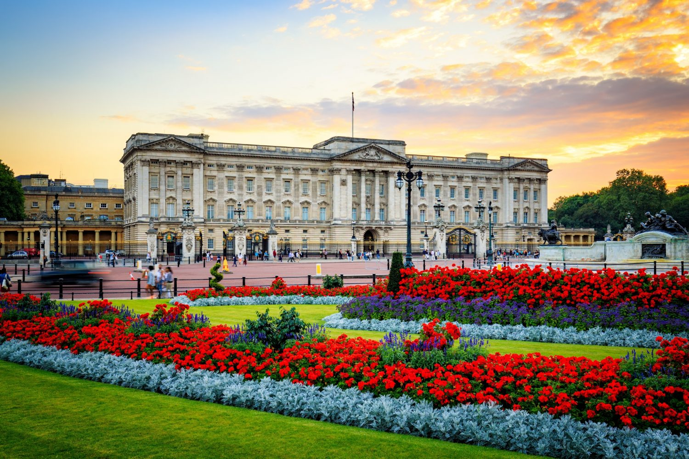
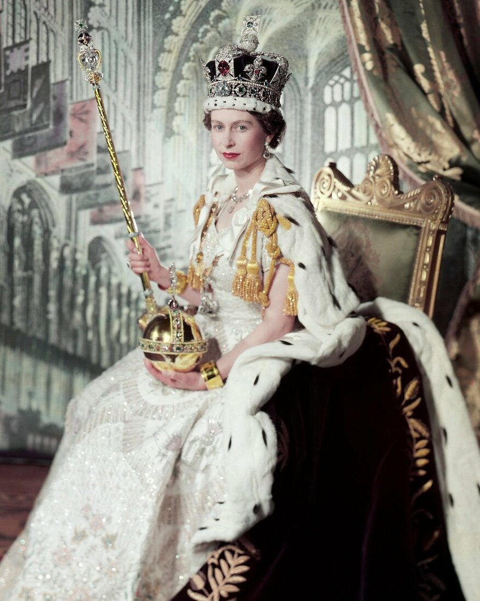
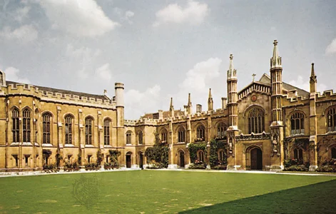
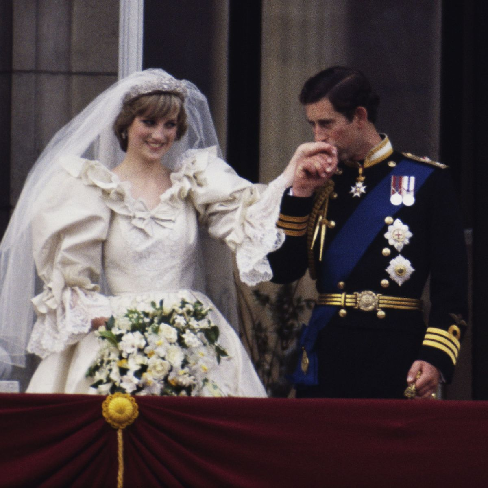
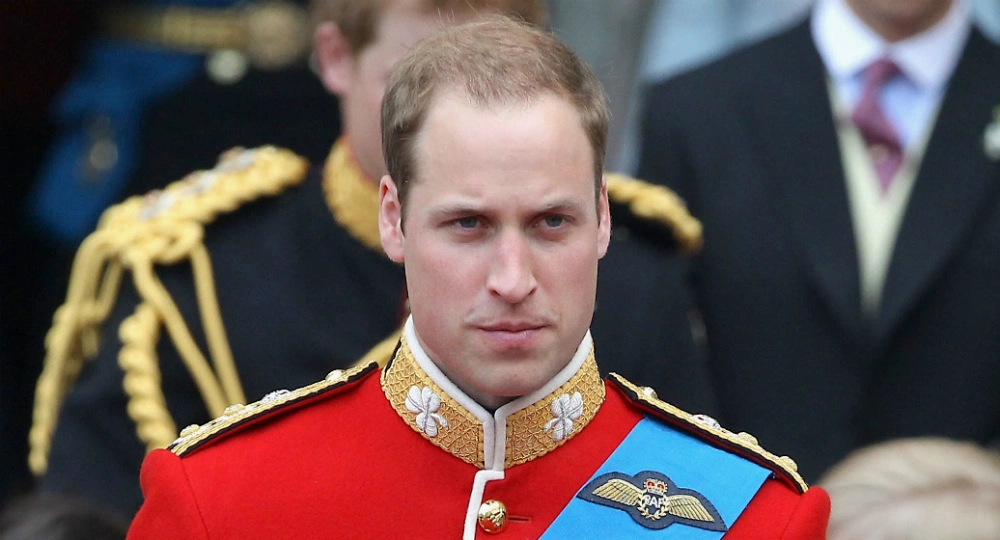
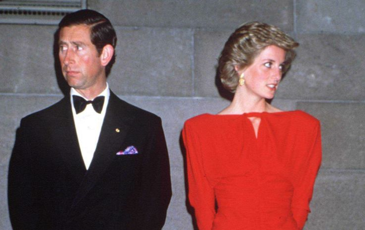
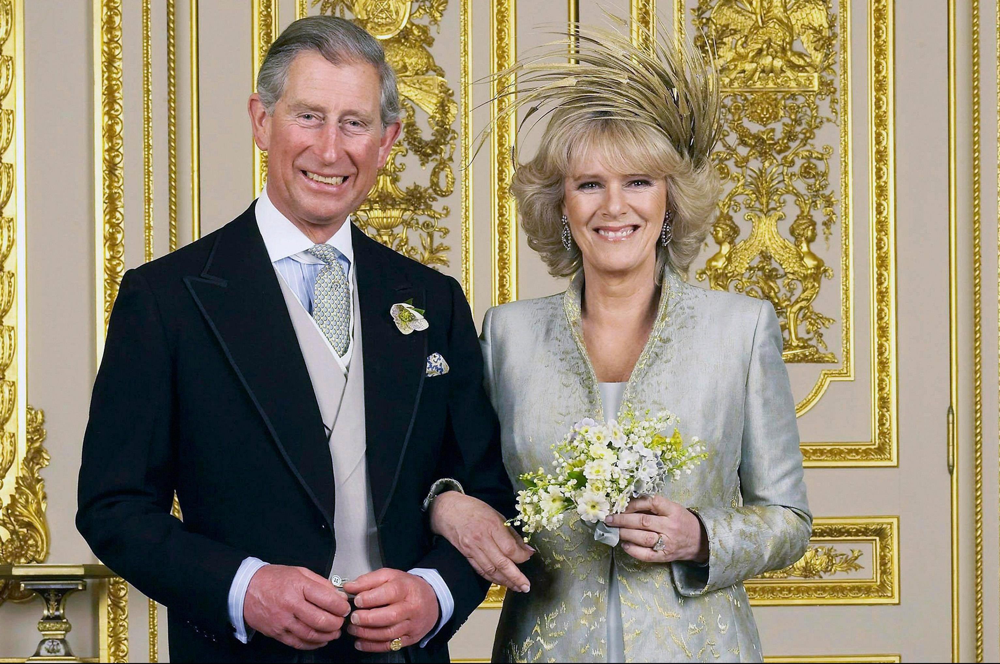

Charles Philip Arthur George.
75 years old.
King of United Kingdom (UK).
Become the King when Queen Elizabeth ll died.
Born on November 14, 1948.
Eldest son in his family.
Charles III Signature
Born in Buckingham Palace, London.
When he was 5, his mom (Elizabeth II) was crowned
After private schooling at Buckingham Palace and in London, Hampshire, and Scotland, Charles entered Trinity College, Cambridge, in 1967.
He took a bachelor’s degree there in 1971. He also spent a term at the University College of Wales, Aberystwyth, learning Welsh in preparation for his investiture as prince of Wales on July 1, 1969, at Caernarvon Castle.
He then attended the Royal Air Force College (becoming an excellent flier) and the Royal Naval College, Dartmouth, and from 1971 to 1976 took a tour of duty with the Royal Navy.
On July 29, 1981, Charles married Lady Diana Frances Spencer, daughter of the 8th Earl Spencer The royal wedding was a global media event, broadcast live on television and watched by hundreds of millions of people
She took the title princess of Wales.
The couple’s first child, Prince William of Wales, became at his birth (June 21, 1982) second in line of succession to the throne.
Their second child, Prince Henry Charles Albert David (known as Harry), was born on September 15, 1984.
The couple divorced on August 28, 1996.
A year later Diana died in an auto accident
On April 9, 2005, he married Camilla Parker Bowles (born 1947), with whom he had a long-standing relationship.
Queen Elizabeth II dies 'peacefully' at Balmoral at 96 after historic 70-year reign.
Charles III Expresses ‘Profound Sorrow’ Over Queen’s Death in First Speech as King
His remarks capped a solemn day of remembrance after the death of his mother, Queen Elizabeth II.
King Charles III becomes monarch after death of mother, Queen Elizabeth II